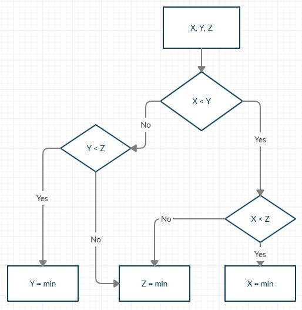

Создайте блок-схему, описывающую алгоритм поиска минимального из трех чисел. Запишите алгоритм программно: создайте три переменные с любыми числовыми значениями; используя именно и только вложенные условные операторы if (НЕ логические операторы), найдите минимальное число и отобразите на экране его значение.

По склону Фудзи ползет улитка. Ее скорость определяется в диалоговом окне. Проверить и вывести на экран, улитка двигается вперед, назад или остается на месте (скорость (вектор) положительная, отрицательная или ноль).
У вас и у вашего друга в кармане столько денег, сколько было указано в окнах prompt. В зависимости от общей суммы ваших сбережений вы можете полететь на Мальту изучать английский язык или выпить пива. С помощью условного оператора определите ваши возможности и отобразите на экране в alert.
В переменную age запишите возраст человека. Если значение больше или равно 20 и меньше 30, в alert выводится “Выслать повестку”.
Чтобы добраться домой, вас устраивают маршрутки номер 7, 225 и 255. Какая маршрутка приехала – определяется в prompt. Если ваша, то вы едете домой, в противном случае – ожидаете.
В переменную day записан текущий день недели. Если это не суббота и не воскресенье, выведите в alert сентенцию о необходимости идти на работу.
Создайте две переменные: greeting и lang. Переменная greeting – пустая строка. Переменная lang может принимать три значения: 'ru', 'en', 'de' (например, из prompt). Если она имеет значение 'ru', то в переменную greeting запишите приветствие на русском языке, если имеет значение 'en' – то на английском, если 'de' – на немецком. Выведите на экран приветствие в зависимости от значения переменной lang. Решите задачу через if-else и через switch-case.
В переменной month хранится текущий месяц (new Date()). Определите в какую пору года попадает этот месяц (зима, лето, весна, осень).
Переменная lang может принимать два значения: 'ru' и 'en'. Переменная day принимает значение от 0 до 6-ти. Если lang имеет значение 'ru', то в переменную result запишите название дня недели на русском языке в соответствии со значением переменной day (0 – воскресенье, 1 – понедельник, 2 – вторник и т.д.). Если же lang имеет значение 'en' – то аналогично, но день недели будет на английском.
Найдите и исправьте ошибки в коде: